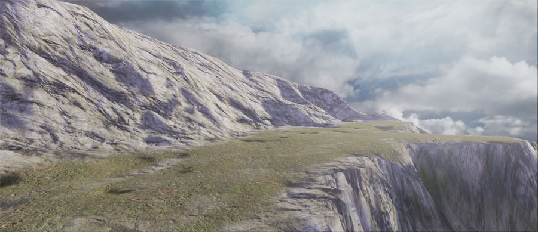
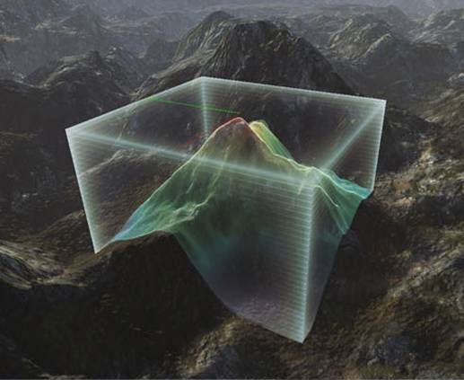
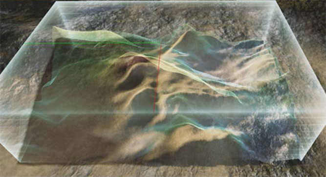
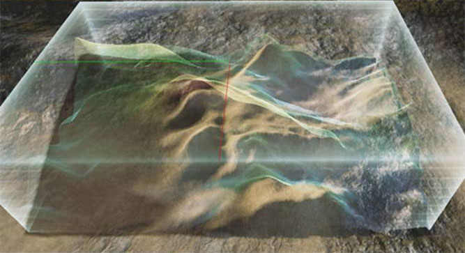

Editing Landscape Terrain
Overview
Landscape terrains can be edited directly inside of Unreal Editor using the Editing section of the Landscape Edit Dialog.
The Editing section allows a landscape to be selected from all landscapes within the level to be edited and provides access to the Editing Tools, Brushes, and Target Layers. These all work together to make editing the landscape simple and intuitive. The tool determines what action is to be performed on the landscape. The brush determines the area of the landscape affected by the selected tool. The target determines what aspect of the landscape is affected by the tool, which can either be the heightmap or a texture layer.
Landscape Edit Mode
All of Landscape's editing functions are available in the Landscape Edit Mode window. Press the Landscape Edit Mode button to switch the editor to Landscape Edit Mode and bring up the Landscape Edit window:
Enabling Landscape Edit mode will also enable realtime update on any perspective viewports in the editor.
 IMPORTANT: As of the February QA build, this mode is hidden by default unless the
IMPORTANT: As of the February QA build, this mode is hidden by default unless the -landscapeedit command line parameter is specified when launching the editor.
Landscape Selection
The landscape selection box shows, and is used to set, which landscape is active and editable.
Clicking the Landscape combobox will display a menu listing all landscapes currently in the map.
Select a landscape from the list to make that the active landscape. All subsequent editing will then be applied to that landscape.
Tools
The process of editing a landscape involves using one or more tools that sculpt the landscape by painting on the underlying heightmap. These tools range from the simple paint tool to other tools that use complex algorithms to apply interesting effects to the heightmap, such as erosion. Some of the tools apply solely to the heightmap, while others can be used on the heightmap as well as the texture layers of the landscape. In addition, each tool has a set of properties that determine how the tool affects the landscape.
The currently selected tool determines the operation that will be performed on the landscape. The tools use Brushes to apply their effects using strokes.
| Common Controls | Operation |
|---|
| Ctrl + Left Mouse Button | Perform a stroke that applies the selected tool's effects to the heightmap or selected layer. |
| Ctrl + Z | Undo last stroke. |
| Ctrl + Y | Redo last undone stroke. |
Paint Tools
The tools below are used to perform "painting" actions on the heightmap or layers using the selected brush.
Paint
When operating on the heightmap, this tool will increase or decrease the heightmap height or layer weight in the shape of the currently selected brush and falloff.
The brush strength determines the amount of raising or lowering.
Smooth
 This tool smooths the heightmap or layer weight. The strength determines the amount of smoothing.
Heightmap Smoothing
(Hover for Before/After)
Layer Smoothing
(Hover for Before/After)
This tool smooths the heightmap or layer weight. The strength determines the amount of smoothing.
Heightmap Smoothing
(Hover for Before/After)
Layer Smoothing
(Hover for Before/After)
| Option | Description |
|---|
| Total Strength | Controls how much smoothing occurs with each brush stroke has. |
| Detail Smooth | If checked, performs a detail preserving smooth using the specified detail smoothing value. Larger detail smoothing values remove more details, while smaller values preserve more details. |
| (Hover for Before/After) |
Flatten
When operating on the heightmap, this tool will flatten the landscape to the level of the landscape under the mouse cursor when you first activate the tool.
(Hover for Before/After)
For layer weights, this tool directly sets the selected layer's weight to the value of the Total Strength slider.
| Option | Description |
|---|
| Total Strength | The weight to set the selected layer to, where 1.0 is 100% opacity for the layer. |
Thermal Erosion
This tool uses a thermal erosion simulation to adjust the height of the heightmap. This simulates the transfer of soil from higher elevations to lower elevations. The larger the difference in elevation, the more erosion will occur. This tool also applies a noise effect on top of the erosion, if desired, to provide a more natural random appearance.
(Hover for Before/After)
| Option | Description |
|---|
| Total Strength | Controls how much effect each brush stroke has. |
| Threshold | The minimum height difference necessary for the erosion effects to be applied. Smaller values will result in more erosion being applied. |
| Surface Thickness | The thickness of the surface for the layer weight erosion effect. |
| Iteration Num | The number of iterations performed. Larger values result in more levels of erosion. |
| Erosion Effects Filter |
| Subtraction | Only applies erosion effects that result in lowering the heightmap |
| Both | Apply all erosion effects, both raising and lowering the heightmap |
| Addition | Only applies erosion effects that result in raising the heightmap |
| |
| Noise Scale | The size of the noise filter used. The noise filter is related to position and scale, which means if you don't change Noise Scale, the same filter is applied to the same position many times. |
Hydraulic Erosion
This tool uses a hydraulic erosion simulation, i.e. erosion from water, to adjust the height of the heightmap. A noise filter is used to determine where the initial rain is distributed. Then the simulation is calculated to determine water flow from that initial rain as well as dissolving, water transfer, and evaporation. The result of that calculation provides the actual value used to lower the heightmap.
(Hover for Before/After)
| Option | Description |
|---|
| Total Strength | Controls how much effect each brush stroke has. |
| Rain Amount | The amount of rain to apply to the surface. Larger values will result in more erosion. |
| Sediment Cap. | The amount of sediment that the water can carry. Larger values will result in more erosion. |
| Iteration Num | The number of iterations performed. Larger values result in more levels of erosion. |
| Rain Distribution Filter |
| Both | Rain is applied only where the noise filter is positive. |
| Addition | Rain is applied to the entire area. |
| |
| Rain Dist. Scale | The size of the noise filter for applying initial rain to the surface. The noise filter is related to position and scale, which means if you don't change Rain Dist. Scale, the same filter is applied to the same position many times. |
| Detail Smooth | If checked, performs a detail preserving smooth to the erosion effect using the specified detail smoothing value. Larger detail smoothing values remove more details, while smaller values preserve more details. |
Noise
This tool applies a noise filter to the heightmap or layer weight. The strength determines the amount of noise.
| Option | Description |
|---|
| Total Strength | Controls how much effect each brush stroke has. |
| Noise Effects Filter |
| Both | Apply all noise effects |
| Addition | Only applies noise effects that result in raising the heightmap |
 |
| Subtraction | Only applies noise effects that result in lowering the heightmap |
| Noise Scale | The size of the perlin noise filter used. The noise filter is related to position and scale, which means if you don't change Noise Scale, the same filter is applied to the same position many times. |
Component Tools
The tools described below act on the component level of the current landscape.
Component Selection
This tool selects Landscape components, one at a time, for subsequent use with other tools, such as moving the components to streaming levels and deleting components.
The selection cursor is always limited to one component:
When components have been selected, they become shaded red:

- Clear Component Selection
- Clears the current selected component(s).
Add New Landscape Component
This tool creates new components for the current Landscape, one at a time.
When the Add Landscape Component tool is active, the cursor shows a green wireframe where new components can be added:
Using the tool adds a new component where the cursor is located:
Delete Landscape Components
The tool performs the delete action on the components that have been selected by the Selection tool:
Using the tool removes the selected components:
Move to Streaming Level
This tool moves the selected components, via using the Selection tool, to the current streaming level. This makes it possible to move sections of a Landscape into a streaming level so that they will be streamed in and out with that level, optimizing the performance of the landscape.
When the streaming level is visible, the landscape renders all the components:
 Toggling the visibility of the level (which can be done by clicking the button for that level in the Level Browser) causes the components in that level to no longer be rendered:
Note that if you want to use streaming levels, you must store your LandscapeMaterial inside a .upk package file rather than inside the map package. If you fail to do so you will get cross-level reference errors when you come to save your level.
Toggling the visibility of the level (which can be done by clicking the button for that level in the Level Browser) causes the components in that level to no longer be rendered:
Note that if you want to use streaming levels, you must store your LandscapeMaterial inside a .upk package file rather than inside the map package. If you fail to do so you will get cross-level reference errors when you come to save your level.
Region Tools
The tools below are used to perform actions on specific regions of the landscape.
Region Selection
This tool selects regions of the landscape using the current brush settings and tool strength to be used to fit the gizmo to a specific area or to act as a mask for coping data to, or pasting data from, a gizmo.
| Controls | Operation |
|---|
| Ctrl + Left Mouse Button | Adds to the selected region. |
| Ctrl + Shift + Left Mouse Button | Removes from the selected region. |
- Clear Region Selection
- Clears the current selected region(s).
- Use Region as Mask
- When enabled, the region selection acts as a mask with the active area being comprised of the selected region.
- Negative Mask
- When enabled and Use Region as Mask is also enabled, the region selection acts as a mask, but the active area is comprised of the unselected region.
Region Copy/Paste
This tool allows for copying height data from one area of a landscape to another through the use of landscape gizmos.
- Copy Data to Gizmo
- Copies the data within the gizmo bounds to the gizmo taking into account any masking from selected regions.
- Fit Gizmo to Selected Regions
- Positions and resizes the gizmo so that it completely encompasses all region selections. $ Fit Height Values to Gizmo Size : $ Clear Gizmo Data :
When this tool is active, the controls for importing and exporting gizmo data become active.
Brushes
The tools are applied to the landscape using brushes which can have different shapes, sizes, and falloffs. Brushes should be a familiar concept to anyone who has experience using Photoshop or a similar image editing application. Essentially, a brush is a way of defining the area of effect of the currently active tool.
- Brush Size
- This determines the size of the brush in Unreal Units including the falloff. Within this area, the brush will have at least some effect.
- Brush Falloff
- This determines the percentage from the brush's extents where the falloff should begin. Essentially, this determines how hard the brush's edges are. A falloff of 0.0 means the brush will have full effect throughout with hard edges. A falloff of 1.0 means the brush will only have full effect at its center and will falloff throughout its entire area to the edge.
The size and falloff of the current brush is displayed in the viewport as a flashing, light-purple filled circle, or pair of concentric circles.
Circle Brush
The circle brush simply allows the current tool to be applied in a circular area
Circle Brush Falloff Type
Clicking on the currently selected brush icon opens a drop-down a menu to choose the falloff type.
| | Smooth | The falloff is a linear falloff which has been smoothed to round off the sharp edges where the falloff begins and ends. |
| | Linear | This falloff is a sharp, linear falloff. |
| | Sphere | This uses an half-ellipsoid shaped falloff so the start of the falloff begins smoothly and ends sharply. |
| | Tip | This falloff is the opposite to the Sphere falloff, with an abrupt start and a smooth ellipsoidal end. |
Below is an example of each of these falloff types when operating on the heightmap, with the same radius and falloff:
Pattern Brush
The pattern brush allows you to use an arbitrary shape for the brush by sampling a single color channel from a texture to use as the alpha for the brush. The texture pattern is tiled as the brush is painted.
For example, the textures below could be used as the alpha:
Those would result in the following brushes:
Alpha Brush
Clicking on the Pattern brush icon opens a drop-down a menu which allows you to select the Alpha brush.
The alpha brush is similar to the pattern brush, but instead of tiling the texture across the landscape as you paint, it orientates the brush texture in the direction of your painting and drags the shape as you move the cursor.
Alpha and Pattern Brush Settings
| Setting | Description |
|---|
Use Texture
| Pressing the R,G,B or A buttons will set the alpha brush contents to the data from the corresponding channel of the texture that is currently selected in the Content Browser. On the right, a preview of the alpha brush is shown. Clicking the preview image will locate the current alpha brush source texture in the Content Browser. |
| Texture Scale (pattern brush only) | Sets the size of the sampled texture in relation to the surface of the landscape.
|
| Texture Rotation (pattern brush only) | Sets the rotation of the sampled texture in relation to the surface of the landscape.
|
| Texture Pan [U/V] (pattern brush only) | Sets the offset of the sampled texture on the surface of the landscape.
|
* Note that the texture used for the alpha or pattern brush must contain source art (the uncompressed data). Imported textures contain a copy of the source art by default, but we remove this data from the textures packages supplied with UDK builds to reduce the download size. So to use this feature on a UDK build, you must import the texture yourself.
Component Brush
The Component Brush is a brush used for operating on individual components. The cursor becomes limited to a single component at a time:
It is the only brush available when using the tools that operate on the individual component level.
Gizmo Brush
The Gizmo brush is used for fully painting the data contained within a Landscape Gizmo, which is a tool that makes it possible to perform actions to a specific localized area of the landscape.
This brush is only available when the Region Copy/Paste tool is active.
Targets
A target is any individual part of the landscape that can be edited. The heightmap as well as the texture layers of the landscape can all be targets and edited using the Landscape Edit Dialog and tools. The heightmap is added to the Targets list when the landscape is created. New layers can be added using the Edit Mode and their weights can be adjusted using the editing tools in a similar manner to modifying the heightmap, though only a subset of the tools can effect layers.
The Target Layers section lists all the possible items that can be edited using the editing tools. The selected target specifies what the tool should affect. Each target is displayed with its name and a small thumbnail image. For texture layers, this thumbnail will display a snapshot of the texture applied to the layer.
When selected and focused, the target is shown highlighted in blue:
When focus is directed elsewhere, the selected target is highlighted in white:
Layers
Landscape layers determine how a texture (or material network) is applied to a landscape terrain. A landscape uses multiple layers with different textures, scaling, rotation, and panning blended together to create the final textured terrain.

Weight Editing
Each layer has a weight specifying how much influence that layer has on the landscape. Layers have no particular order. Instead, each layer's weight is stored separately and these all up to 1.0.
To modify the weight of a layer, the paint tool is used to increase or decrease the weight of the active layer. Any layer at any time. Simply select the layer to adjust the weighting of and use the paint tool in the same manner you would to paint the heightmap. As you increase the weight of one layer, the weight of the other layers will be uniformly decreased for that area.
Conversely, when painting a layer away (i.e. holding down Ctrl + Alt while painting), it is not clear what layer should be increased to replace it. The current behavior is to uniformly increase the weights of any other layers to match. Because of this behavior, it is not possible to paint all layers completely away. Instead of painting layers away, it is recommended you choose the layer you want to paint in its place, and paint that additively.
Landscape Materials
Painting layers has no effect unless the material specified in the LandscapeMaterial property of the Landscape actor is configured to make use of it.
- See the LandscapeMaterials document for more information on setting up the Landscape material.
Edit Mode
The landscape defaults to having no layers. New layers can be added by enabling the Edit Mode in the Target Layers section. Clicking the Edit radio button enables the Edit mode which toggles the display of the controls for adding new layers.
To add a new layer, enter the name of the layer in the Add Layer Name text field and set the other properties as desired:
- Hardness
- TODO
- NoBlend
- TODO
Click the button to create the new layer.
When in Edit Mode, the Target in the list also display their properties, as seen above, and allow for the editing of the Hardness of each layer.
DebugView Mode
DebugView mode allows the weight of specific layers to be visualized on the landscape in the viewport. When DebugView mode is enabled, radio buttons allowing selection of individual color channels are shown with the Targets in the list.
 Selecting a channel will apply a shader to the landscape which shows the area that channel of the selected Target covers.
Selecting a channel will apply a shader to the landscape which shows the area that channel of the selected Target covers.
Landscape Gizmos
Landsape Gizmos are editor-only Actors that are similar to volumes in that they define a specified area. There purpose is to hold height data for an area of a landscape so that it can be saved or copied to another location on the landscape.
Gizmo Properties
These are the properties that are saved out when exporting Gizmos.
- Width
- The base width for Gizmo Actor in Unreal Units; X Axis shown as red line.
- Height
- The base height for the Gizmo Actor in Unreal Units; Y Axis shown as green line.
- LengthZ
- The base Z length for the Gizmo Actor in Unreal Units.
- MarginZ
- The Z value for space when you fit the Gizmo to the selection, with Max height and Min height. When you fit Gizmo to selected region, LengthZ = (Max height - Min height) + 2 * MarginZ.
- MinRelativeZ
- Minimum height value of data in the Gizmo. Height values in the Gizmo are normalized from 0.f to 1.f, and displayed as (Value - MinRelativeZ) * RelativeScaleZ.
- RelativeScaleZ
- Height scale of data in the Gizmo.
Copying to the Gizmo
In order to copy a portion of a landscape, the data for that area must be copied to a gizmo. Then, that data can later be pasted to another location.
To copy selected region:
- Select the Region Selection tool.
- Use the brush strokes to select a region of the landscape, similar to the normal painting process.
- Enable Use Region as Mask so the selection will be used as a mask when copying the data.
- Select the Region Copy/Paste tool. The gizmo will become visible in the viewport.
- Press the Fit Gizmo to Selected Regions button to position and size the gizmo so that it encompasses all selected regions.
- Press the Copy Data to Gizmo button to transfer the data for the selected region of the landscape within the gizmo's bounds. Pressing Ctrl + C performs the same function.
To copy area within gizmo:
- Select the Region Copy/Paste tool. The gizmo will become visible in the viewport.
- Select the gizmo by clicking on it. The transform widget should appear.
- Move, rotate, and scale the gizmo so that it encompasses the portion of the landscape you wish to copy.
- Press the Copy Data to Gizmo button to transfer the data for the portion of the landscape within the gizmo's bounds. Pressing Ctrl + C performs the same function.
Pasting from the Gizmo
Pasting data from a gizmo makes it possible to transfer parts of a landscape from one location to another. The data can either be pasted completely to creat an identical feature, or it can be painted to the new location using brush strokes and strength settings to partially transfer the feature.
Before data can be pasted from a gizmo, it must first be copied to a gizmo.

To paste gizmo data:
- Move, rotate, and scale a gizmo which contains data so that it covers the area you wish to paste the data to.
- Paste the data using one of the available brushes (Circle, Pattern, Alpha, Gizmo) to "paint" the data from the gizmo.
- The Gizmo brush is used to fully paste the data from the gizmo. Pressing Ctrl + V also fully pastes the data from the gizmo.
- Other brushes can be used to paint the data from the gizmo using the current brush size and strength.
If there is a region selected using the Region Selection tool and Use Region as Mask is enabled, pasted data is applied according to the masked region.
 

Gizmo Data Import/Export
Heightmap data can be imported and exported to and from the gizmo through the Import/Export to Gizmo section in the Landscape Edit window.
To Import Data to the Gizmo:
- Click the browse for file button ( ) and select the heightmap file (16-bit raw file) you want to import to the gizmo. The file and dimensions of the heightmap will be filled in.
Note: Since the import process uses the raw file format, there is no way to correctly determine which dimension is which. A best guess will be made, but you may need to manually reverse the dimensions in order to import the heightmap correctly.
- If you want to import layer weight information as well, press the Add Layer button ( ) to add as many layers as desired.
- Select the layer weightmap file (8-bit raw file) to import for each layer. The file and layer name will be filled in. The layer name uses the name of the file by default. Change the layer name if needed. Enabling the No Import checkbox will prevent any individual layer information from being imported.
- Once the heightmap and any layers are selected, press the Import to Gizmo button to import the data to the gizmo.
If the dimensions are not correct, you may see something similar to this:

Reverse the dimensions and re-import to get the correct result. If the dimensions were correct, the gizmo should show the correct data.
To Export Gizmo Data:
- With the gizmo populated with data (see Copying to the Gizmo), press the Export Gizmo Data button to export the gizmo data to a file. Enabling the Export Layers checkbox will also export the layer weight data to files.
- Choose a location and name for the heightmap file.

- If exporting layers, choose locations and filenames for each exported layer.
Gizmo List
The Gizmo List displays a list of saved gizmos so that they can easily be reused at a later time.
| Control | Description |
|---|
| | Saves the gizmo's current position, size, and rotation to the list. |
| | Removes the gizmo currently selected in the list. |
| | Sets the gizmo's position, size, and rotation to that of the currently selected gizmo in the list. |
Important!
You are viewing documentation for the Unreal Development Kit (UDK).
If you are looking for the Unreal Engine 4 documentation, please visit the Unreal Engine 4 Documentation site.